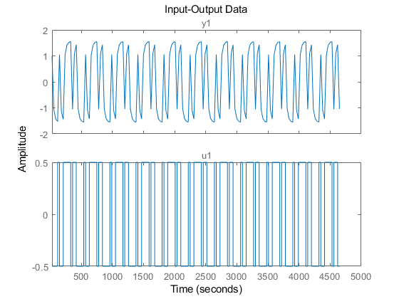
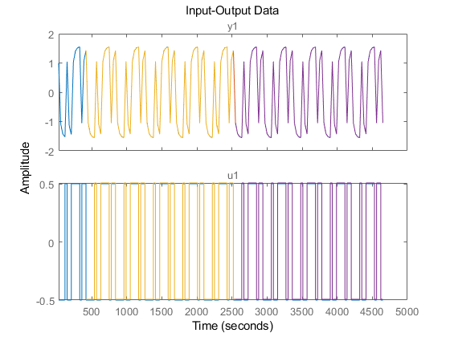
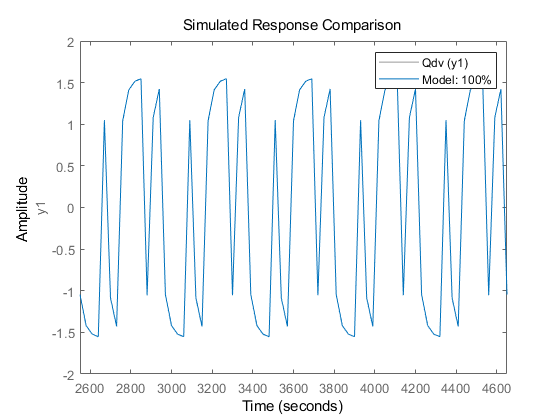
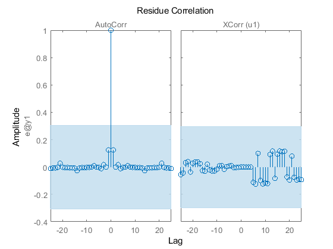

Contents
1911055李拙人
clc; clear; num=[1]; den=[1 1]; % 一阶系统 den=[1 0.6 1]; num=[0.04798 0.0464]; den=[1 -1.81 0.9048]; noiseAmp=0.1; sys = tf(num,den);
sys=linsys1;
时域分析
tmp = stepinfo(sys); Ts=tmp.SettlingTime
Ts = 78.2415
取-3dB
[mag,ph,w]=bode(sys); %依次返回幅频、相频、角频率 mag = 20*log10(squeeze(mag)); % dB % plot(mag,w) w0=spline(mag,w,mag(1)-3) % rad/s
w0 =
0.0499
计算M/IM序列参数
fM=w0/2/pi % Hz delta=0.3/fM delta = 30; %根据上面的值，手动取值 Np=[1/(fM*delta),1.2*Ts/delta,1.5*Ts/delta] %确定M序列的长度 M_Np=max(round(max(Np)),7); M_T=M_Np*delta; M_Np=M_Np*2; M_T=M_T*2; M_d=delta; if M_T>Ts disp('M序列周期大于原始系统') end simTime=11*M_T
fM =
0.0079
delta =
37.7736
Np =
4.1971 3.1297 3.9121
M序列周期大于原始系统
simTime =
4620
sim('mysysIM.slx');
警告: Square root of a negative number
in '<a
href="matlab:open_and_hilite_hyperlink
('mysysIM/Water-Tank
System/Sqrt','error')">mysysIM/Water-Tank
System/Sqrt</a>'. Consider setting the
'Output signal type' to complex.
Q=iddata(myout,myin,M_d); figure(2) plot(Q);%画出封装的输入输出数据 dataStart = M_T/M_d; Qe = Q([dataStart:end]);% 去第一个周期 Qd=detrend(Qe); %去趋势项 % plot(Qe,Qd); Qde=Qd([1:end/2]); %前一半数据用来测试 Qdv=Qd([end/2+1:end]); %后一半数据用来验证 figure(3) plot(Q,Qd,Qde,Qdv); 
ident
NN=struc(1:10,1:10,1:10); Loss_fun= arxstruc(Qde,Qdv,NN); order =[4 4 1]; Model=arx(Qde,order) figure(4) compare(Qdv,Model);%预测输出与实际输比较 figure(5) resid(Model,Qde); %模型预测误差及相关分析 Model_tf_d=tf(Model) %离散模型 Model_tf_c=d2c(Model_tf_d) %连续模型 % Model_tf_c=d2c(Model_tf_d,'tustin') num=cell2mat(Model_tf_d.num) den=cell2mat(Model_tf_d.den) num1=cell2mat(Model_tf_c.num) den1=cell2mat(Model_tf_c.den) sim('myverify2.slx') % plot(simVerifyOut.time,simVerifyOut.signals.values(:,1),simVerifyOut.time,simVerifyOut.signals.values(:,2));
Model =
Discrete-time ARX model: A(z)y(t) = B(z)u(t) + e(t)
A(z) = 1 - 1.305 z^-1 + 1.379 z^-2 - 1.232 z^-3 + 0.1649 z^-4
B(z) = 2.549 z^-1 - 2.955 z^-2 + 3.095 z^-3 - 2.692 z^-4
Sample time: 30 seconds
Parameterization:
Polynomial orders: na=4 nb=4 nk=1
Number of free coefficients: 8
Use "polydata", "getpvec", "getcov" for parameters and their uncertainties.
Status:
Estimated using ARX on time domain data "Qde".
Fit to estimation data: 100% (prediction focus)
FPE: 2.524e-14, MSE: 1.794e-14
Model_tf_d =
From input "u1" to output "y1":
2.549 z^-1 - 2.955 z^-2 + 3.095 z^-3 - 2.692 z^-4
------------------------------------------------------
1 - 1.305 z^-1 + 1.379 z^-2 - 1.232 z^-3 + 0.1649 z^-4
Sample time: 30 seconds
Discrete-time transfer function.
Model_tf_c =
From input "u1" to output "y1":
0.188 s^3 - 0.0003357 s^2 + 0.0004652 s - 8.799e-09
----------------------------------------------------------
s^4 + 0.06009 s^3 + 0.002404 s^2 + 0.0001535 s + 2.306e-08
Continuous-time transfer function.
num =
0 2.5493 -2.9555 3.0951 -2.6917
den =
1.0000 -1.3046 1.3791 -1.2321 0.1649
num1 =
0 0.1880 -0.0003 0.0005 -0.0000
den1 =
1.0000 0.0601 0.0024 0.0002 0.0000
警告: Output port 1 of '<a
href="matlab:open_and_hilite_hyperlink
('myverify2/Idmodel1','error')">myverify2/Idmodel1</a>'
is not connected.
ans =
Simulink.SimulationOutput:
tout: [56x1 double]
SimulationMetadata: [1x1 Simulink.SimulationMetadata]
ErrorMessage: [0x0 char]
 